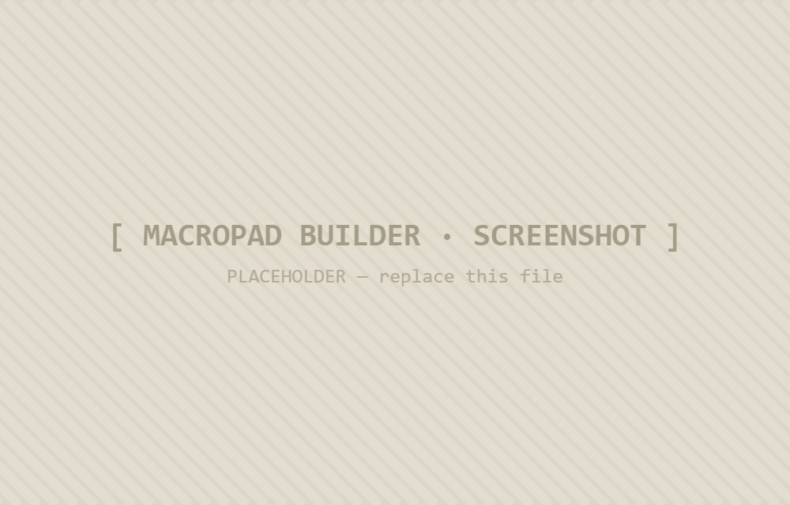
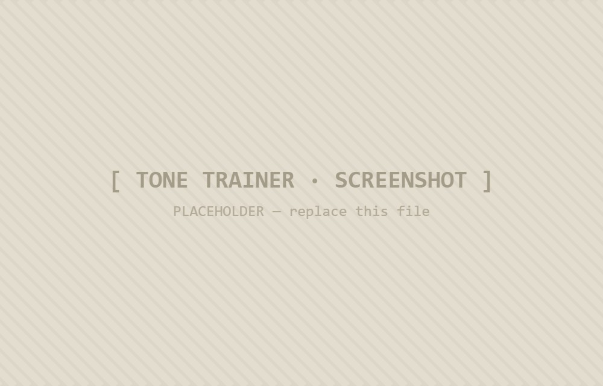
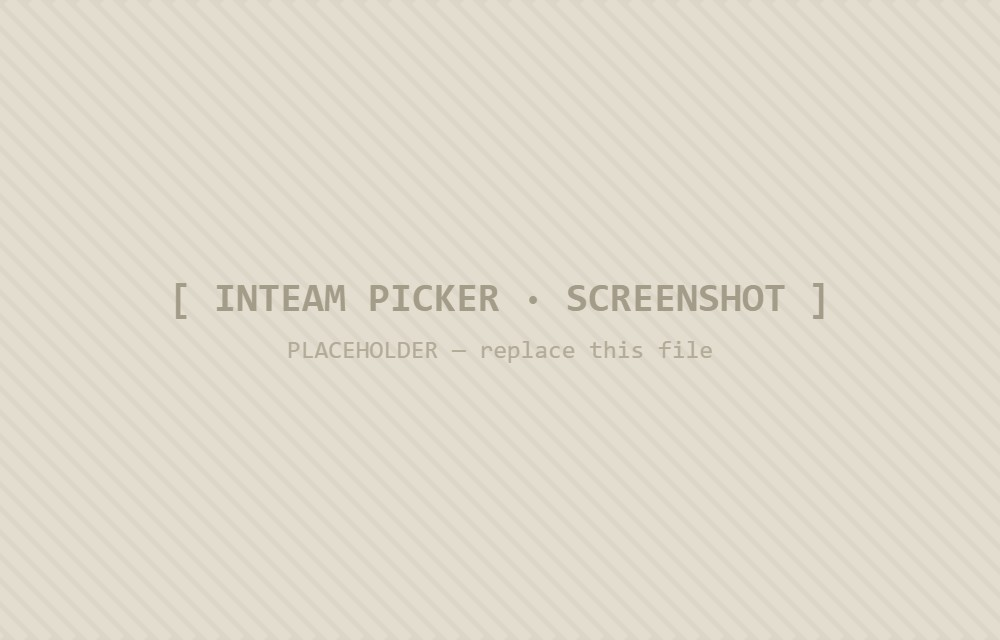

Things that actually do work
Tools
Small web utilities built for the classroom and the bench — each one does a single job, fast. Open them in the browser, no install.

[ macropad builder · screenshot ]
01 — Hardware
ESP32 Macropad Builder
Drag keys onto a grid, assign functions, and get a wiring diagram plus working firmware out the other end. The fastest path from idea to a flashed board.
Open tool →
02 — Language
Chinese Tone Trainer
Drill the four Mandarin tones by ear. Plays a syllable, you guess the tone, it tracks where your ear keeps slipping — built from my own study decks.
Open tool →
[ tone trainer · screenshot ]
[ inteam picker · screenshot ]
03 — Classroom
INTeam Picker
Paste a class list, set the constraints, and get balanced project teams in one click. Built to break up the same old friend-groups without the arguments.
Open tool →